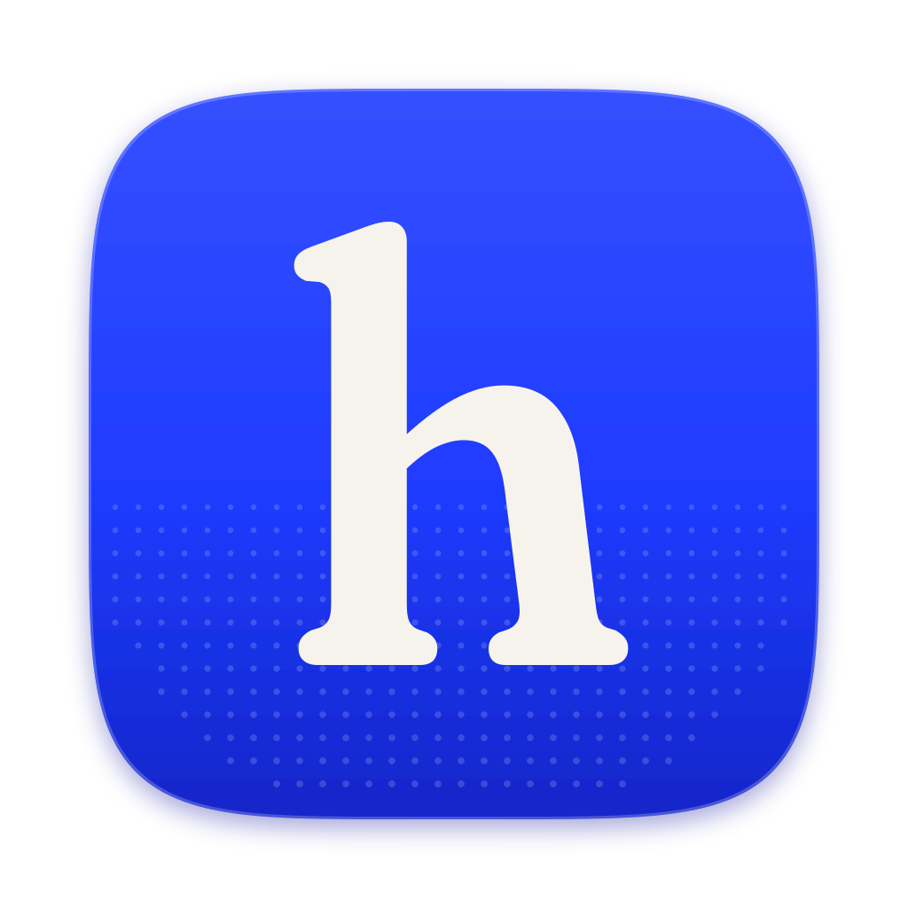

Logo
The wordmark is a lowercase “heed” in Fraunces, soft and a little wonky (SOFT 100, WONK 1, about 400 weight), drawn as outlines so it needs no font. The mark is a soft serif “h” on an ultramarine squircle. Keep clear space of one “e” height around both.
Mark, at size

heed-app-icon.svg (1024 master) · heed-mark.svg · heed-mark-mono.svg · favicon.svgIn the dock and the browser
Let it run.
We’ll cover the rest.
Colour
Ultramarine is used in big, confident fields (a full-bleed panel, a feature band), not as a 2px accent. Everything else is cream and warm ink. Status colours carry meaning only. Every text pair meets WCAG AA; Ink 3 is for icons and rules, never text.
Dark: a deep ink-blue night, not inverted cream
Type
Fraunces for display only (28px and up): soft, a little wonky, light (300–400), tracked tight. Geist for the interface at 13–15px. Geist Mono for numerals, times, counts, shortcuts and IDs, always with tabular figures. All three are under the SIL Open Font License and bundled. Arabic, Devanagari and CJK use the system fonts.
Your mornings, back.
Give your team their mornings back
Fraunces · SOFT 100 · WONK 1 · 300–400 · −1.5% to −2.5%
Reply to Margaret Thistlewood: Moorland sync
Margaret asked whether Thursday works and hasn’t heard back. Nothing is sent until you approve it.
12,480 items · 09:41 · ⌘K · 2,318 tokens
Geist 400/500 · Geist Mono, tabular
Scale
Imagery
Only original or public-domain images. Original procedural ultramarine dither and engraving textures (the code is in docs/brand/tools); CC0 landscape paintings duotoned to ultramarine on cream, credited in CREDITS.md; and a generated sky behind floating product cards. No stock photos, no other brands’ illustrations.
Product UI
Calm and light: white cards with soft, low shadows and 12–16px radii, floating over sky or painterly imagery. One primary action per card. Agent work shows as a step list with check, spinner and pending states, a thin progress meter and mono counts.
Reply to Margaret · Gmail
STEP 2 OF 3 · 0:04 · 812 TOKENS
- ✓Read the thread and your calendar
- Drafting a reply in your voice
- Waiting for your approval
PLAN · HEED MAX
£99/mo
Smart asks this month
342 / 900
Motion
Quick, quiet and never blocking. Cards rise 8px and fade in; lists stagger by 30ms (at most 8 items); agent steps tick to a check with a 180ms draw; ghost text fades in over 80ms and never slides. Brand moments only: a slow dither drift (20–40s) and sky parallax of at most 12px. With reduced motion: fades only.
standard cubic-bezier(.4,0,.2,1)
micro 120ms · ui 200ms · panel 320ms
brand 600–900ms
- Reply to Margaret 2m
- Moorland sync moved 14m
- Invoice 4471 is due 1h
- Board deck comments 3h
- Renewal: Linear 2d